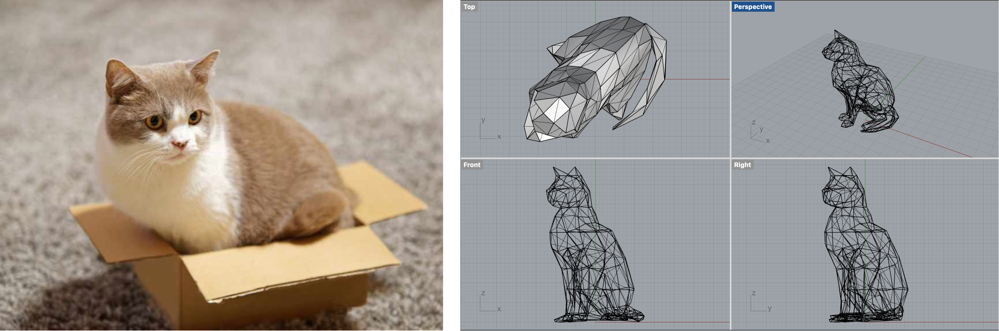
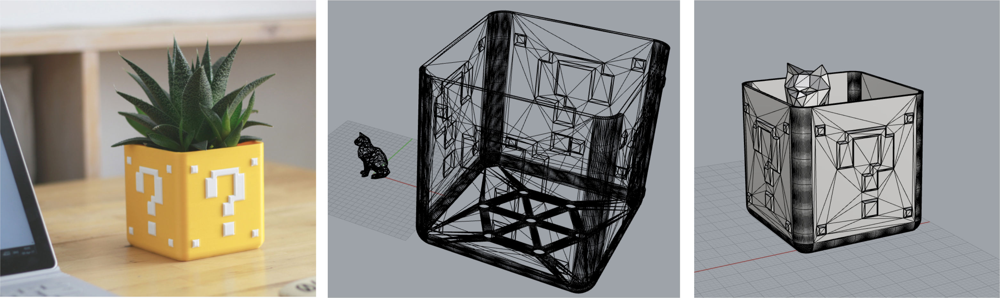
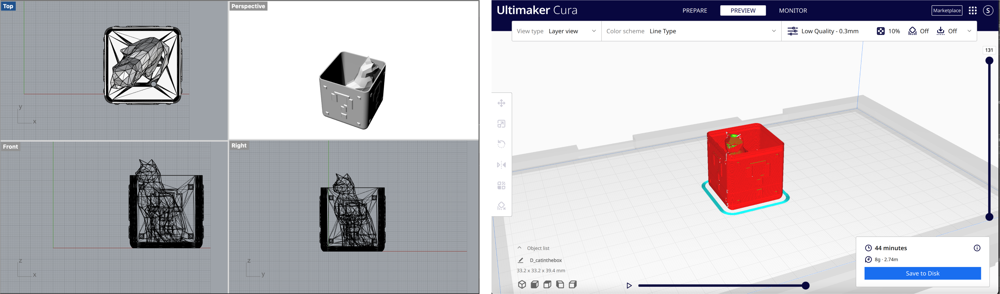
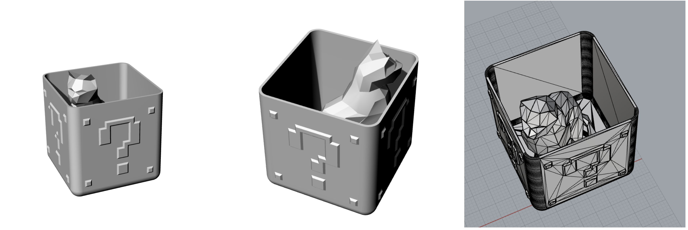
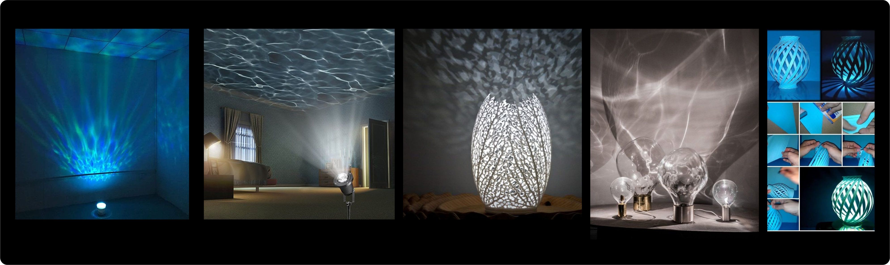

Getting Meshy! and Lamps!
Assignment 5
Part 1 : Modify the mesh of two STLs 🐱📦
cat in the box

Coming from an idea that cat loves boxes, I came up with an idea to combine stl mesh of a sitting cat and a box. I found this cute cat stl modeling at Thinggivers and downloaded it to modify the mesh.
 
Part 2 : Design Lamp Innered 💡
I modified the above model that I made for assignment 2 to have the bottom and top joints. This is the final rendered preview of the box model that I made on Rhino with grasshopper.
Moodboard & Inspiration

Lamp Measurement